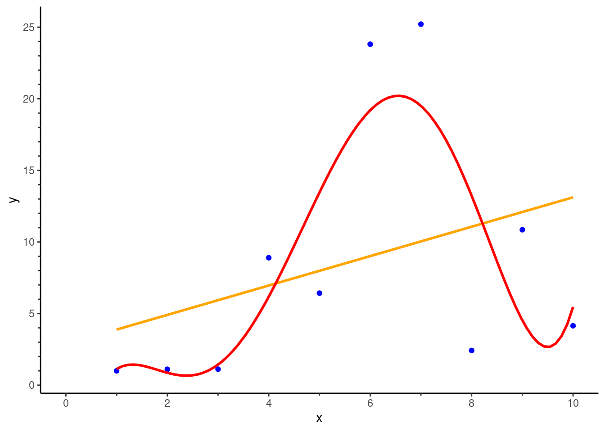

| Angle (degrees) | Height adove table (m) | ||||
|---|---|---|---|---|---|
| 0.2 | 0.4 | 0.6 | 0.8 | 1.0 | |
| 0 | T | H | T | T | H |
| 45 | H | T | T | T | T |
| 90 | H | H | T | T | H |
| 135 | H | H | T | H | T |
| 180 | H | H | T | H | H |
| 225 | H | T | H | T | T |
| 270 | H | T | T | T | H |
| 315 | T | H | H | T | T |
Problem Sets
Problem 2.1 The deterministic nature of random coin throwing
Suppose that, in an idealised world, the ultimate fate of a thrown coin – heads or tails – is deter- ministically given by the angle at which you throw the coin and its height above a table. Also in this ideal world, the heights and angles are discrete. However, the system is chaotic 2 (highly sensitive to initial conditions), and the results of throwing a coin at a given angle and height are shown in Table 1.
Problem 2.1.1
Suppose that all combinations of angles and heights are equally likely to be chosen. What is the probability that the coin lands heads up?
To do this we count the occurrence of heads and tails in Table 1, and find that \(P(H) = \frac{19}{40}\).
Problem 2.1.2
Now suppose that some combinations of angles and heights are more likely to be chosen than others, with the probabilities shown in Table 2. What are the new probabilities that the coin lands heads up?
| Angle (degrees) | Height adove table (m) | ||||
|---|---|---|---|---|---|
| 0.2 | 0.4 | 0.6 | 0.8 | 1.0 | |
| 0 | 0.05 | 0.03 | 0.02 | 0.04 | 0.04 |
| 45 | 0.03 | 0.02 | 0.01 | 0.05 | 0.02 |
| 90 | 0.05 | 0.03 | 0.01 | 0.03 | 0.02 |
| 135 | 0.02 | 0.03 | 0.04 | 0.00 | 0.04 |
| 180 | 0.03 | 0.02 | 0.02 | 0.00 | 0.03 |
| 225 | 0.00 | 0.01 | 0.04 | 0.03 | 0.02 |
| 270 | 0.03 | 0.00 | 0.03 | 0.01 | 0.04 |
| 315 | 0.02 | 0.03 | 0.03 | 0.02 | 0.01 |
We must now find a weighted average of the coin flip outcomes where the weights are provided by the values in Table 2. If we do so we find that \(P(H) =0.5\).
Problem 2.1.3
We force the coin-thrower to throw the coin at an angle of 45 degrees. What is the probability that the coin lands heads up?
We must now find a weighted average of the coin flip outcomes given that we are constrained to be in the row corresponding to 45 degrees. If we do so we find that the \(P(H) ≈0.23\).
Problem 2.1.4
We force the coin-thrower to throw the coin at a height of 0.2m. What is the prob- ability that the coin lands heads up?
Similarly to the previous question we now constrain ourselves to be in the relevant column. Now we obtain \(P(H) ≈0.70\).
Problem 2.1.5
If we constrained the angle and height to be fixed, what would happen in repetitions of the same experiment?
The coin would always land the same way up.
Problem 2.1.6
In light of the previous question, comment on the Frequentist assumption of exact repetitions of a given experiment.
We cannot have exact repetition because if we did so we would always get the same result! We need enough variation in the throwing method to allow different outcomes but not too much variation. Where do we draw the line?
Problem 2.2 Objections to Bayesianism
The following criticisms of Bayesian statistics are raised in an article by Gelman [4]. Provide a response to each of these.
Problem 2.2.1
‘As scientists we should be concerned with objective knowledge rather than subjective belief.’
As we argue in this chapter all analyses are associated with a degree of subjective knowledge. At least with Bayesian inference we are required to explicitly state one aspect of the analysis - the priors - that represent our pre-data experimental beliefs in a particular parameter set. This transparency is desirable and it is the job of the analyst to report if inferences are sensitive to a particular choice of prior. Also, (as Gelman himself indicates) priors can be highly informed from previous data not only from inherent subjective beliefs.
Problem 2.2.2
‘Subjective prior distributions don’t transfer well from person to person.’
This depends on two things: the degree to which priors are informed by previous data; and the variation in beliefs between people. If there is a paucity of data and little consensus over the state of nature then, yes, there will be significant variation in priors between people. However even though there may be variance in priors this does not necessarily imply variation in the posteriors. In fact, the more data we collect (in general) the less sensitive our inferences become to prior choices.
Problem 2.2.3
‘There’s no good objective principle for choosing a noninformative prior … Where do prior distributions come from, anyway?’
I like Gelman’s response here: there is no objective method for choosing a likelihood!
Problem 2.2.4
A student in a class of mine: ‘If we have prior expectations of a donkey and our dataset is a horse then Bayesians estimate a mule.’
This presupposes that a mule is undesirable because of our lack of belief in it. If we were that certain that a mule was impossible then we could address this by setting it a zero prior beforehand. Also this is really a question about the validity of point estimates versus those that contain a measure of uncertainty. If we simply give a point estimate (perhaps the posterior mean) then it may be the case that we get a mule. However our uncertainty interval will no doubt contain both a horse and a donkey. If we were predisposed to want a horse or a donkey then we could choose an estimator (or likelihood) that reflects this predisposition.
Problem 2.2.5
‘Bayesian methods seem to quickly move to elaborate computation.’
All modern statistical methods make extensive use of computation. Perhaps peoples’ complaint with this method is that the time required for an applied analysis with Bayesian statistics is nondeterministic.
Problem 2.3 Model choice
Suppose that you have been given the data contained in subjective_overfitShort.csv and are asked to find a ‘good’ statistical model to fit the \((x , y)\) data.
Problem 2.3.1
See Figure 1. Not a great fit but given the paucity of data we probably can’t do much better.

Problem 2.3.2
Fit a quintic (powers up to the fifth) model to the data. How does its fit compare to that of the linear model?
See Figure 1. Fitting the data more closely, but is almost certainly overfitting (see next parts of the question).
Problem 2.3.3
You are now given new data contained within subjective_overfitLong.csv. This contains data on 1000 replications of the same experiment, where the x values are held fixed. Using the least squares fits from the first part of this question, compare the performance of the linear regression model with that of the quintic model.
Computing the mean squared residual for each case we have that for each of the fits,
- Simple: \(\overline{RMSE} ≈\) 8.11.
- Complex: \(\overline{RMSE} ≈\) 12.77.
And so the simple model has a greater predictive accuracy for out of sample data.
Problem 2.3.4
Which of the two models do you prefer, and why?
The simple one! The complex model fits the noise not the signal. It is overfit.